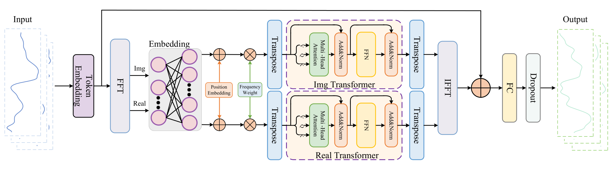

原始数据接入
接入历史功率、气象观测、天气预报和设备状态等多源信息。
本页重点说明三个问题：数据如何进入系统，模型如何完成预测，结果又如何转化为可用的业务建议。
接入历史功率、气象观测、天气预报和设备状态等多源信息。
完成时间对齐、异常处理、切片建窗和标准化，为模型提供统一输入。
利用 FFT、实虚双分支和变量轴注意力建模跨变量频域依赖。
输出多步功率预测结果，并同步生成置信区间与风险提示。
面向储能控制、备用安排和日内修正提供直接依据。
用 MSE、MAE、R² 和多数据集对比验证模型性能。
用时域图、频域图、谱相干和频率权重解释模型为什么有效。
通过网页曲线、指标图表和系统说明完成平台展示。

把功率与气象多变量序列映射到频域，显式保留多尺度周期信息。
通过实虚双分支和变量轴注意力建模谱相干关系，突出关键频带。
经时域重建后输出多步预测结果，并为风险判断和辅助决策提供输入。
先把光伏功率和气象序列映射到频域，把时域中隐含的周期结构显式表达出来。
分别建模幅值信息和相位信息，避免关键相位关系在单一实值表示中丢失。
在变量维度上学习光伏功率与气象变量之间的频域耦合关系。
再回到时域输出多步预测结果，并进入风险分析与业务建议模块。
由历史功率、站端传感器、天气预报和设备状态组成多源输入基础。
由 RevIN 预处理、FFT 变换、CVSC-Transformer 推理和指标评估构成核心链路。
由可视化展示、风险预警、储能建议和日内调度辅助构成应用输出。
支持接入功率、气象和设备状态等多类变量，为建模提供基础数据。
支持 15 / 60 / 180 分钟等代表性前瞻窗口的多步预测展示。
通过谱相干、频率权重及时域和频域图示解释模型有效性。
结合风险等级和预测区间，形成储能动作、计划修正和业务建议。
把建模重点从单一时间依赖转向频域耦合关系，更贴近光伏与气象变量之间的物理联系。
通过实部与虚部分开编码保留相位信息，增强波峰波谷与天气扰动的对齐能力。
自动突出日周期、半日周期和关键扰动频带，提升精度的同时增强可解释性。
将算法结果组织成可展示的平台原型，形成预测、解释、预警和辅助决策闭环。